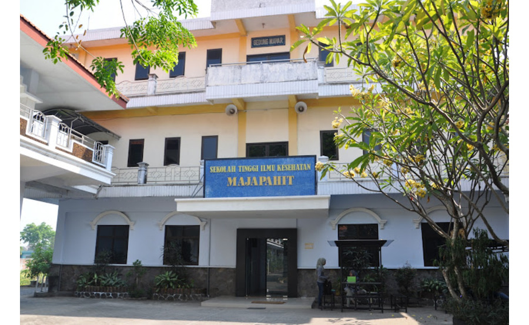

Sekolah Tinggi Ilmu Kesehatan Majapahit.

Sekolah Tinggi Ilmu Kesehatan Majapahit Mojokerto disingkat Stikes Majapahit didirikan oleh Yayasan Kesejahteraan Warga Kesehatan (YKWK) di Mojokerto atas dasar Surat Keputusan Menteri Pendidikan Nasional RI Nomor : 09/D/O/2004 tanggal 5 Januari 2004. Selanjutnya ijin penyelenggaraan Program Studi pada Sekolah Tinggi Ilmu Kesehatan Majapahit Mojokerto tertuang pada SK. Dirjen DIKTI No. 3129/D/T/2006 tentang ijin penyelenggaraan program studi, yaitu S-1 Keperawatan dan S-1 Kesehatan Masyarakat. Kemudian Tanggal 15-16 Juli 2010 sudah terlaksana Proses Visitasi akreditasi pertama dari Assessor BAN PT.
Akademi Bahasa dan Kebudayaan Jepang dan atau Akademi Bahasa Asing MESRA itulah, dijadikan embrio dari keberadaan Universitas Darma Persada yang didirikan oleh himpunan anak-anak bangsa yang bersatu dan berkarya dalam wadah PERSADA, Perhimpunan Alumni dari Jepang. Pendirian Universitas Darma Persada diprakarsai oleh lima eksponen alumni dari Jepang: Indra kartasasmita, Soegeng Soebroto, Sudjiman, Purwanto dan Abdillah Muchsin. Prakarsa tersebut, mereka teruskan ke PERSADA di bawah kepemimpinan ketua umum, Yoga Soegomo, yang berikutnya mengundang rapat anggota PERSADA. Maret 1986. Rapat yang berlangsung di jalan KH Wahid Hasyim 76, jakarta Pusat dan dihadiri 60 anggota waktu itu, sepakat untuk mendirikan suatu Universitas.
Dalam tahun 2005 dibentuklah Tim Task-Force guna mengikuti Program Hibah Kompetisi (PHK) yang diselenggarakan Dirjen Dikti, yang akhirnya berhasil mendapatkan Dana PHK-A1 pada tahun 2006 dan dilanjutkan PHK-PMP (Peningkatan Mutu Pendidikan) pada tahun 2007. Dana-dana tersebut dapat membantu bagi penambahan sarana & prasarana dan juga untuk meningkatkan SDM pengelola sesuai aturan yang ditetapkan Dirjen Dikti.
Pada bulan Desember 2005 dilakukan perpindahan kampus dari UNIM Mojokerto ke gedung sendiri yang letaknya bersebelahan di samping Barat UNIM, yakni di Jl. Raya Jabon – Gayaman Km. 02 Kec. Mojoanyar Kab. Mojokerto (terletak di Jalan Raya Mojokerto – Mojosari). Dengan menempati kampus milik sendiri tersebut tentunya memberikan rasa kebanggan tersendiri bagi warga Stikes-Poltekkes Majapahit untuk meningkatkan pelaksanaan Tri Dharma Perguruan Tinggi. Upaya pengembangan dan pembangunan sarana dan prasarana terus dilaksanakan menuju standarisasi mutu pendidikan.
Stikes Majapahit dibuka berangkat dari tuntutan masyarakat terhadap peningkatan pelayanan kesehatan yang bermutu dan profesional. Pelayanan Keperawatan dan Kesehatan Masyarakat sebagai salah satu sub sistem pelayanan kesehatan juga berupaya meningkatkan pelayanannya dengan salah satu cara meningkatkan sumber daya manusia melalui peningkatan kesehatan (Keperawatan dan Kesehatan Masyarakat) yang baik.
Untuk meningkatkan kualitas sumber daya tiap prodi menuju standarisasi mutu pendidikan, maka Stikes-Poltekkes Majapahit mengajukan akreditasi ke Badan Akreditasi Nasional Perguruan Tinggi (BAN-PT) Depdiknas RI.
Pada 2017 dilakukan penyatuan atau marger antara Poltekkes Majapahit dengan STIKes Majapahit sesuai dengan Surat Keputusan Mentri Riset, Teknologi dan Pendidikan Tinggi Republik Indonesia Nomor 433/KPT/I/2017 tentang penyatuan Politeknik Kesehatan Majapahit di Kabupaten Mojokerto yang di selenggarakan oleh Yayasan Kesejahteraan Warga Kesehatan ke Sekolah Tinggi Ilmu Kesehatan Majapahit di Kabupaten Mojokerto yang diselenggarakan oleh Yayasan Kesejahteraan Warga kesehatan Kabupaten Mojokerto tanggal 3 Agustus 2017. Keputusan tersebut mulai berlaku pada tanggal 3 Agustus 2017.